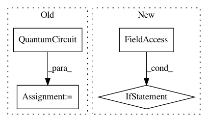

8e094feebf098642c9e03651d38618ed56829fe4,qiskit/aqua/utils/boolean_logic.py,BooleanLogicNormalForm,_set_up_circuit,#BooleanLogicNormalForm#Any#Any#Any#Any#Any#Any#,117
Before Change
if circuit is None:
if self._qr_ancilla:
circuit = QuantumCircuit(self._qr_variable, self._qr_clause, self._qr_ancilla, self._qr_outcome)
else:
circuit = QuantumCircuit(self._qr_variable, self._qr_clause, self._qr_outcome)
return circuit
After Change
self._qr_clause = _set_up_register(self.num_clauses, qr_clause, "clause")
self._qr_outcome = _set_up_register(1, qr_outcome, "outcome")
max_num_ancillae = max(max(self._num_clauses if self._qr_clause else 0, self._num_variables) - 2, 0)
num_ancillae = 0
if mct_mode == "basic":
num_ancillae = max_num_ancillae
In pattern: SUPERPATTERN
Frequency: 4
Non-data size: 4
Instances
Project Name: Qiskit/qiskit-aqua
Commit Name: 8e094feebf098642c9e03651d38618ed56829fe4
Time: 2019-02-09
Author: shaohan.hu@ibm.com
File Name: qiskit/aqua/utils/boolean_logic.py
Class Name: BooleanLogicNormalForm
Method Name: _set_up_circuit
Project Name: Qiskit/qiskit-aqua
Commit Name: a26b0cdecfbf59a809b19ec5166382cb127d29be
Time: 2018-10-16
Author: shaohan.hu@ibm.com
File Name: qiskit_aqua/algorithms/single_sample/iqpe/iqpe.py
Class Name: IQPE
Method Name: _construct_kth_evolution
Project Name: Qiskit/qiskit-aqua
Commit Name: a26b0cdecfbf59a809b19ec5166382cb127d29be
Time: 2018-10-16
Author: shaohan.hu@ibm.com
File Name: qiskit_aqua/algorithms/single_sample/qpe/qpe.py
Class Name: QPE
Method Name: _construct_qpe_evolution
Project Name: Qiskit/qiskit-aqua
Commit Name: da6253b1e90446e450e87ff9d1371be67e02db8a
Time: 2020-09-30
Author: 47442626+a-matsuo@users.noreply.github.com
File Name: qiskit/aqua/algorithms/amplitude_amplifiers/grover.py
Class Name: Grover
Method Name: _run